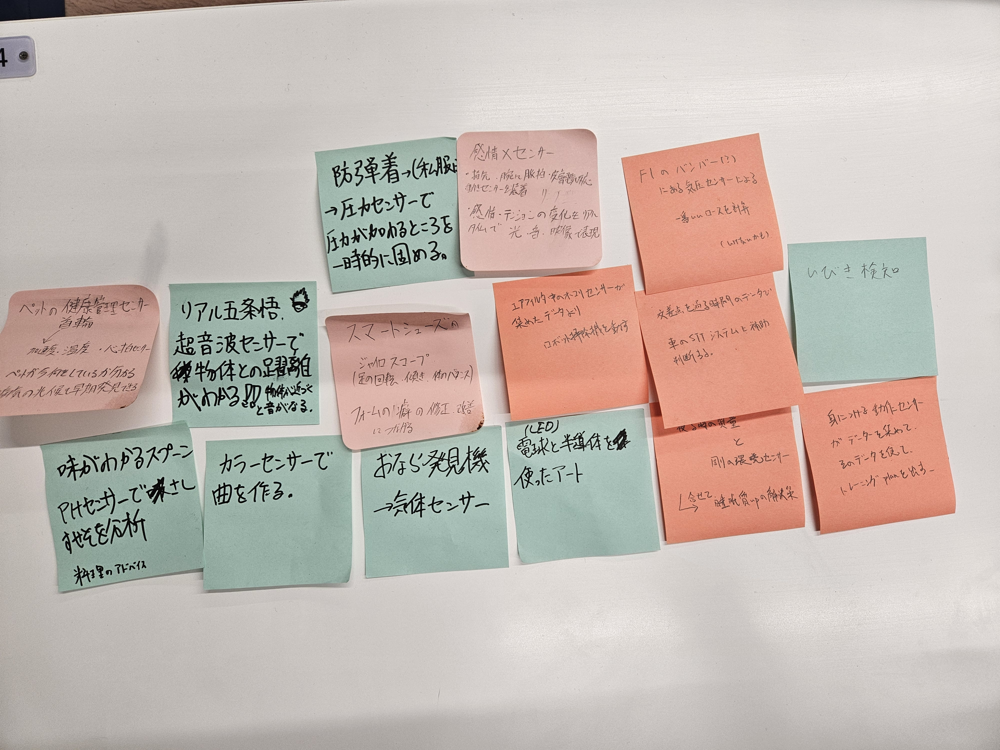

1.IOT（データ保存）で何ができそうか？
→①心拍数や体温を計測して健康状態を管理できる。
②顧客の購入履歴を保存してトレンドを分析できる。
③使用時間を保存することで、改善（節約や問題の発見）につながる。
④AIを搭載したものがどんどん賢くなる。
⑤視聴履歴や検索履歴をもとに興味に合う情報を提供できる。
⑥データを比較して問題点と改善点を導き出せる。
⑦データをもとにAIや機械が今後の結果を予想できる。
⑧監視カメラによる安全性の確認とトラブル対策。
2.どのようなデータを保存していくと価値あるものになるか？
予想１→ユーザー情報。 例：健康測定時計による計測全般・顧客の購入履歴など
予想２→時間情報 例：光熱の使用量・気温・位置情報など
予想３→トレンド 例：家電などのトレンド（売れ行き）・検索の表示回数など
説明→予想１は、個人や企業が情報をもとに改善できるという利点がある。
予想２は、時間の経過で得られる情報をもとに分析改善ができる。
予想３は、企業がや個人がデータをもとに流行を知ることができる。
3.グループワークした内容（ポストイット画像）

説明
現存〜空想論まで様々なアイデアが出た。自分たちのグループではないが、赤外線センサーを使った自動で流れる蛇口に温度センサー
を付け加え、体温に合わせて水温を変えるというアイディアが印象的だった。印象的だった点は、もともと存在してた構造に新しい構造を
付け加えることで新しい製品ができると気付かされたからだ。そのグループのおかげでセンサーの使い道の視野が広がった。
自分たちが考えた中で特に実用的だと思ったのは、温度センサー・心拍センサーなどを用いた、ペットの健康が管理できるというものだ。
これは、センサーを首輪などに装着し、ペットの温度と心拍数を直に察知し計測することでデータを撮ることができる。データを集めることで
健康状態を分析できるという仕組みにするつもりだ。